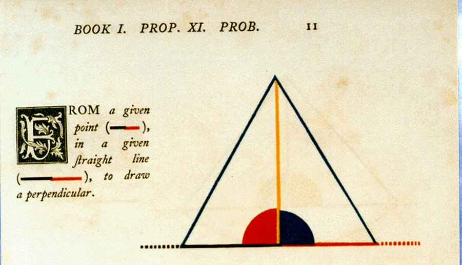
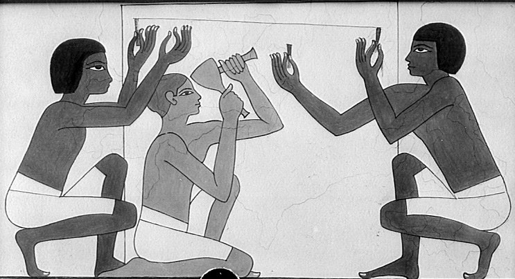
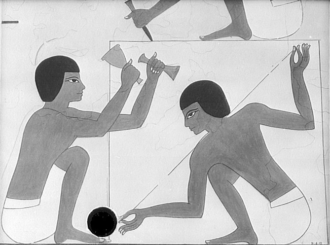
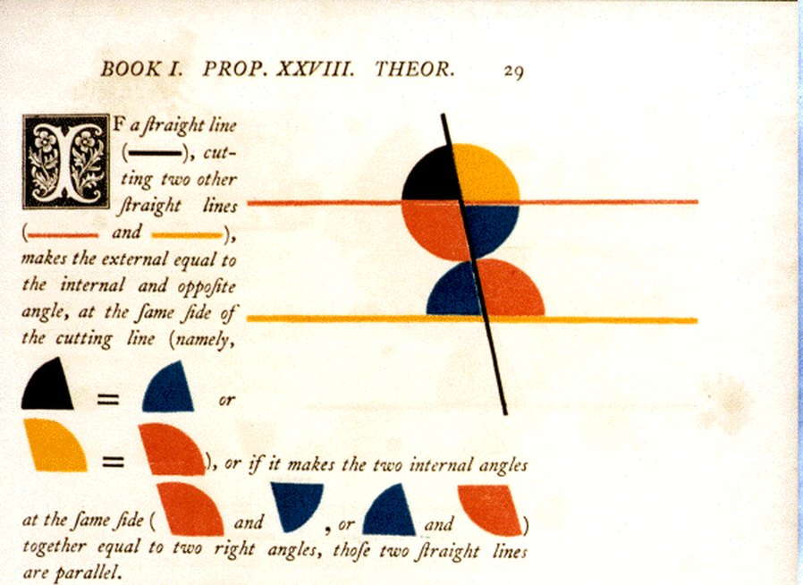

Right Angles
MA.4.GR.1.1 (a Grade 4 preview) Sort angles as less than, equal to, or greater than a right angle.
MA.K12.MTR.2.1 Show math in many ways. MTR.5.1 Use patterns and structure. MTR.6.1 Check that answers make sense.
Today: fold a right-angle checker, find and mark the right angles in shapes, and tell when two lines are perpendicular. Dimensions Math 3B, Chapter 12, Lesson 3 · Right Angles

Alexandria, Egypt · about 300 BC

How can you tell if a corner is a right angle?
Fit a square corner on it. If both sides line up, it is a right angle.
You will…
- Fold a right-angle checker from a scrap of paper.
- Find and mark the right angles in a shape.
- Tell when two lines are perpendicular.
Square corners, long before Euclid
This picture was copied from a painted wall inside a tomb in Egypt. The tomb belonged to Rekhmire, an important man who lived about 3,500 years ago. That is more than 1,000 years before Euclid. Stone workers called masons are squaring a block of stone: making its sides flat and its corners square. Two masons hold short sticks with a cord stretched between them, along the top of the block. The mason in the middle works with a mallet and a chisel.


Builders in Egypt needed square corners so stone blocks would sit flat and fit tight. Later, in Alexandria, Euclid wrote down how to make a right angle with only a straight line and a compass.
Today's math: make your own square corner, then use it to find the right angles in shapes.
Some shapes have 4 corners, and some have 6. Warm up with × 4 and × 6 facts. Type each answer, then check. You can fix any answer and check again.
Fold a square twice
Fold a paper square in half. Then fold it in half again the other way. The dashed lines show the folds.
Think: The Torn Scrap
🔨 Do · ✏️ WriteEuclid's students need a square corner, but nobody brought a set square. All they have is a torn scrap of papyrus. Not one of its edges is straight.
A torn scrap of papyrus with bumpy edges. The fold buttons fold it for you. After two folds, a set square appears, so you can test the new corner.
Fold it once
Press ✋ Fold 1: fold the scrap in half.
Fold it again
Press ✋ Fold 2: fold the straight edge onto itself.
Test the new corner
Drag your folded corner onto the square corner of the set square.
Name the angle
Drag the card that tells the size of your folded corner into the box.
Any scrap?
You made a right-angle checker. Fold once for a straight edge. Fold that edge onto itself for a square corner. Now you can test any corner, even with no set square.
Check a corner with your checker
Put the checker's square corner on the vertex. Line up one edge with one side. Then look at the other side:
- It lines up with the edge too: a right angle. Mark it with a small square.
- It hides under the checker: less than a right angle.
- There is a gap: greater than a right angle.
Watch out: a corner that looks almost square might not be one. Always check. Don't guess.
Right angles in shapes
Check a shape one corner at a time, all the way around. Mark each right angle with a small square, so you don't lose count.
A quarter of a round pie has a right angle at its point. The round edge has no corner at all, so it has no angle.
Perpendicular lines
Two lines that meet at a right angle are perpendicular. The corner of a page, a window frame, a door and its wall when the door stands straight out: all perpendicular.
Four ways to stay on track
Your Turn: The Snipped Frame
🔨 Do · ✏️ WriteEuclid's student cut a frame for a small picture. Then he snipped one corner off. Which corners are still right angles?
The frame, with its corners named A, B, C, D and E. Your folded checker waits at the bottom right. A gold dot marks each corner you have not checked yet.
Check every corner
Drag the checker onto each corner of the frame, one at a time, until all 5 corners are checked.
Mark the right angles
Tap each corner that is a right angle to mark it with a small square.
Count them
Corner hunt
Ben's Almost-Square Tile
🔨 Do · ✏️ WriteBen looks at the corner of a floor tile. He says, "It looks square to me, so it's a right angle."
The corner of Ben's tile: a navy side and a green side meet at a dot. Your folded checker waits at the bottom right.
Check the corner
Drag the checker so its square corner lands on the vertex dot.
Name the angle
Look between the checker and the green side. Drag the card that tells the size of Ben's corner into the box.
Help Ben
Mia's Crossing Streets
🔨 Do · ✏️ WriteA traveler wrote that Alexandria's two widest streets cross at right angles. Mia says, "Where two streets cross like that, there is one right angle."
Two streets seen from above. Street 1 is navy and Street 2 is green. Where they cross, they make four corners, each with a numbered gold circle.
Check every corner
Tap each numbered circle to check that corner with your checker.
Count them
Help Mia
Kai's Sail Shape
🔨 Do · ✏️ WriteKai cuts out a shape like a boat's sail. He says, "It has 4 sides, so it must have 4 right angles."
Kai's shape, with its corners named A, B, C and D. Your folded checker waits at the bottom right.
Check every corner
Drag the checker onto each corner of Kai's shape, one at a time, until all 4 corners are checked.
Mark the right angles
Tap each corner that is a right angle to mark it with a small square.
Count them
Help Kai
On Your Own: Stand a Line
🔨 Do · ✏️ WriteEuclid's book shows how to stand a new line on a straight line, from a point on it, so the two lines are perpendicular. The road here is on a slant, so you can't just point straight up.
A slanted road with a dot on it. A green line starts at the dot. Its round green handle moves it. After your line stands up, a set square appears, with a round ⟳ handle to turn it.
Stand the line up
Drag the round green handle until the green line meets the road at a right angle and a small square appears.
Put the square corner on the dot
Drag the set square so its square corner lands on the dot.
Turn the set square to check
Drag the round ⟳ handle to turn the set square until one edge lies on the road and one edge lies on your line.
Tell how you know
Euclid's Two Posts
🔨 DoTwo posts stand on flat ground. Each post has a round handle at its top. A dotted line shows where each post is pointing.
Flat ground with two posts, post A and post B. Both lean at first. The old page below is where Euclid proved what you are about to see.
Problem 1 · Stand post A
Drag the handle on post A until it stands at a right angle on the ground and a small square appears.
Problem 1 · Stand post B
Drag the handle on post B until it stands at a right angle on the ground too.
Problem 2 · Make them taller
Press ⬆ Make them taller two times. Watch the gold gap lines.
Problem 2 · Will they meet?
Euclid proved it: two lines that both stand at right angles on the same straight line never meet, no matter how long they get. Lines like that are called parallel.

Prove It
✏️ WriteProblem 3 · Prove It
The Window Bar
A window frame has one straight bar across the middle. The bar meets both sides of the frame at right angles. How many right angles can you find in all?
Turn in your work
- Check the list below. Jobs 1 to 8 are required. The Bonus is optional.
- Press 📋 Gather my answers, then 📋 Copy. Or press 🖨️ Print or save as PDF.
- Open this lesson's assignment in Canvas.
- Paste your answers (or upload your PDF and journal photo), then press Submit.
All my answers
Your answers and your work on this page save on this device as you go.
Before you turn in
- I finished Jobs 1 to 8.
- I can fold a right-angle checker from a scrap of paper.
- I can find and mark the right angles in a shape.
- I can tell when two lines are perpendicular.
- I tried the Bonus. (optional)
Lesson 3.12.04 · Triangles
Next, you'll build shapes with just 3 straight sides, and sort them by their sides.
Pavane "Mille Regretz"
A pavane is a slow dance. Dancers walked it in pairs, step by step, to a steady beat. Tielman Susato printed this one in Antwerp in 1551, in a book of dance music. Here it is played on the lute.
Pavane "Mille Regretz," from Tielman Susato's book of dances (Antwerp, 1551). Played on a Renaissance lute by David Hernández Romero. CC BY 3.0, via Wikimedia Commons.